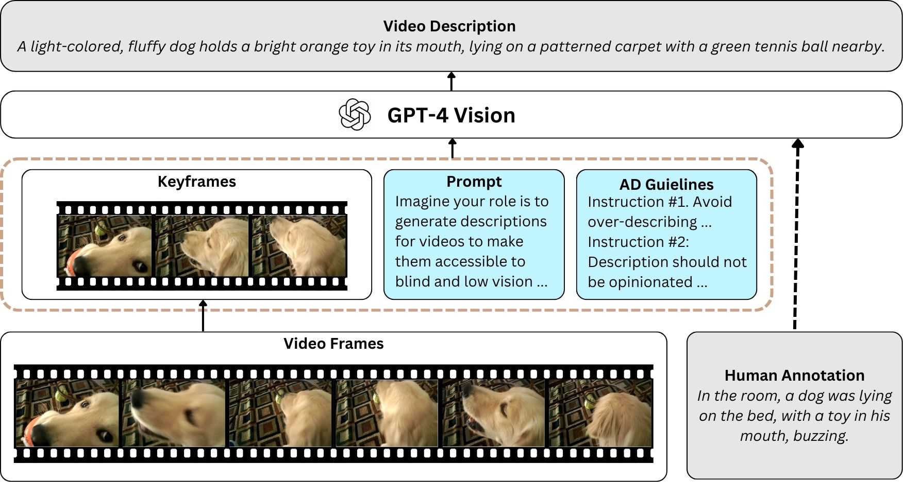

Video descriptions are crucial for blind and low vision (BLV) users to access visual content. However, current artificial intelligence models for generating descriptions often fall short due to limitations in the quality of human annotations within training datasets, resulting in descriptions that do not fully meet BLV users' needs. To address this gap, we introduce VideoA11y, an approach that leverages multimodal large language models (MLLMs) and video accessibility guidelines to generate descriptions specifically tailored for BLV individuals. Using this method, we have curated VideoA11y-40K, the largest and most comprehensive dataset of 40,000 videos described for BLV users. Rigorous experiments across 15 video categories, involving 347 sighted participants, 40 BLV participants, and seven professional audio describers, showed that descriptions generated by VideoA11y outperform original human annotations in clarity, accuracy, objectivity, descriptiveness, and user satisfaction. We evaluated models on VideoA11y-40K using both standard and custom metrics, demonstrating that MLLMs fine-tuned on this dataset produce high-quality accessible descriptions.
Introduction
Video content is being created at an unprecedented rate, especially on platforms like YouTube and TikTok. However, this growth has widened the accessibility gap for blind and low-vision (BLV) users, who rely on audio descriptions (AD) to understand visual content. ADs narrate key visual elements like actions, characters, and scene transitions, but their availability is limited. While professionally produced media often include ADs due to regulations, user-generated content and independent productions lag significantly behind in providing accessibility.
To address these challenges, we developed VideoA11y, an innovative approach using advanced AI models to generate accessible video descriptions tailored for BLV individuals. Accompanied by the VideoA11y-40K dataset, this method leverages multimodal large language models (MLLMs) and curated accessibility guidelines to produce clear, detailed, and accurate descriptions. Evaluations involving sighted and BLV users demonstrate that descriptions created by VideoA11y outperform human annotations across key metrics like clarity, objectivity, and user satisfaction. This solution offers a scalable way to make video content more inclusive and enjoyable for all.
Efforts to improve video accessibility have traditionally focused on tools like YouDescribe and Rescribe, which assist sighted individuals in creating ADs. While helpful, these systems require manual input, limiting scalability. Some approaches have introduced AI-generated video descriptions using image captioning or natural language processing, but these often fail to capture the broader context or handle temporal transitions effectively. The result is descriptions that lack accuracy, coherence, or alignment with accessibility needs.
Recent advances in MLLMs and datasets, such as BLIP2 and Panda-70M, have brought improvements in automatic video understanding. However, they do not tailor their outputs to meet the specific requirements of BLV users. VideoA11y addresses this gap by incorporating professionally curated AD guidelines into the description generation process. By combining cutting-edge AI capabilities with human-centered design principles, VideoA11y provides a significant leap forward in creating meaningful and accessible video descriptions.
Development of VideoA11y
Overview
VideoA11y is designed to generate high-quality, accessible video descriptions using multimodal large language models (MLLMs) guided by accessibility-focused guidelines. At its core, the system relies on a set of 42 curated audio description (AD) guidelines that emphasize clarity, accuracy, and relevance, ensuring that descriptions meet the specific needs of blind and low-vision (BLV) users. These guidelines inform both the creation of the descriptions and the design of the evaluation metrics. The resulting descriptions are both comprehensive and well-structured, making them suitable for a wide range of video categories, including education, sports, entertainment, and instructional content.
To assess and validate its effectiveness, VideoA11y was evaluated through extensive user studies involving sighted and BLV participants. These studies focused on key metrics such as descriptiveness, objectivity, accuracy, and clarity. Additionally, VideoA11y models were benchmarked against state-of-the-art AI models using both standard metrics like BLEU and custom metrics tailored to accessibility. Results consistently demonstrated that VideoA11y-produced descriptions outperform traditional human annotations and baseline AI models, establishing it as a robust and scalable framework for improving video accessibility.

Methodology
VideoA11y uses multimodal large language models (MLLMs) and curated audio description (AD) guidelines to create video descriptions tailored for BLV users. The method begins with extracting keyframes—significant moments in a video—using a luminance-based algorithm that identifies visual changes. These keyframes are processed by MLLMs like GPT-4 Vision, which generate or refine descriptions based on carefully crafted prompts adhering to 42 professional AD guidelines.
Imagine your role is to generate descriptions for videos to make them accessible to blind and low vision individuals. You will watch a sequence of keyframes from a video and read the current description of this video. Your task is to revise the current description. You must follow all the given instructions. Output your result in a dictionary format: {“Video_Category”: A string representing the category of video you believe it to be, “Revised_Desc”: A string of revised description.}
Current Description: {desc_current}
Instructions:
Instruction #1: Avoid over-describing — Do not include non-essential visual details.
Instruction #2: Description should not be opinionated unless content demands it.
Instruction #3: ...
The guidelines were distilled from 154 industry standards, prioritizing clarity, relevance, and objectivity. Prompts guide the MLLM to produce descriptions aligned with these standards, improving detail and accuracy while minimizing extraneous or biased content. Evaluations showed GPT-4 Vision as the optimal model for generating descriptions, laying the foundation for creating the VideoA11y-40K dataset.
Study 1
Study 1 evaluated the performance of VideoA11y using both open-source (Video-LLaVA) and proprietary (GPT-4 Vision) multimodal large language models (MLLMs). The goal was to determine which model best generates video descriptions adhering to curated AD guidelines. A dataset of 150 videos across 15 categories (e.g., sports, education) was used, and descriptions were generated under four conditions:
VideoA11y (LLaVA) without Human Annotations (HA): Generated descriptions using Video-LLaVA and AD-guideline-based prompts.
VideoA11y (LLaVA) with HA: Enhanced Video-LLaVA descriptions by including human annotations as a reference.
VideoA11y (GPT-4 Vision) without HA: Generated descriptions using GPT-4 Vision and guideline-based prompts.
VideoA11y (GPT-4 Vision) with HA: Enhanced GPT-4 Vision descriptions with human annotations.
150 sighted participants rated the descriptions on clarity, descriptiveness, accuracy, and objectivity using a 5-point scale. Results showed that descriptions generated by VideoA11y (GPT-4 Vision) significantly outperformed all other conditions across all metrics. Adding human annotations slightly improved quality but was not statistically significant. Based on these findings, GPT-4 Vision was selected as the core model for creating the VideoA11y-40K dataset.
VideoA11y-40K Dataset
The VideoA11y-40K dataset is a comprehensive collection of 40,000 videos across 15 categories, ranging from sports to instructional content. Descriptions in the dataset were generated using GPT-4 Vision and follow the curated AD guidelines to ensure relevance and precision. Each description averages 52 words, significantly longer and more detailed than those in traditional datasets, which average 20 words.
The dataset’s categories were validated by human reviewers, achieving 96% accuracy in classification. Its detailed and scalable nature makes VideoA11y-40K a valuable resource for training AI models to create accessible video content. By incorporating AD best practices, the dataset supports the development of systems capable of delivering meaningful video descriptions at scale.
Evaluation of VideoA11y
VideoA11y underwent rigorous testing with sighted and BLV participants. Sighted users rated descriptions across clarity, descriptiveness, accuracy, and objectivity. Results showed that VideoA11y significantly outperformed novice human annotations and even matched or surpassed trained human describers, particularly in clarity. Among BLV users, VideoA11y’s impact was pronounced. In a study involving 40 participants across five video categories, over 90% preferred descriptions generated by VideoA11y. Participants praised its clarity, detailed synchronization with video events, and unbiased presentation. These results demonstrate that VideoA11y not only improves comprehension but also enhances the viewing experience for BLV individuals.
Study 2
Study 2 was designed to assess the quality of descriptions generated by VideoA11y compared to novice human annotations from existing datasets. The study also included a comparison with GPT-4 Vision-generated descriptions created using non-compliant prompts (i.e., prompts not following AD guidelines). The goal was to evaluate how well VideoA11y performs in terms of clarity, descriptiveness, accuracy, and objectivity.
The evaluation involved 150 new participants recruited through Amazon Mechanical Turk (MTurk). Each participant reviewed two videos and rated five types of descriptions for each video:
Human Annotation: Descriptions created by novice human annotators in the original datasets.
GPT-4V: Descriptions generated by GPT-4 Vision using non-compliant prompts.
GPT-4V with Human Annotations: GPT-4 Vision descriptions enhanced with novice human annotations.
VideoA11y without Human Annotations: Descriptions generated using VideoA11y’s compliant prompts without leveraging human annotations.
VideoA11y with Human Annotations: VideoA11y descriptions created using compliant prompts with human annotations as a reference.
Participants rated each description on a 5-point scale across the four evaluation metrics. Results showed that VideoA11y with Human Annotations significantly outperformed all other methods on all metrics, with ratings above 4.0 on clarity, descriptiveness, accuracy, and objectivity. VideoA11y without Human Annotations also performed exceptionally well, surpassing novice human annotations and GPT-4V-generated descriptions in all metrics.
These findings highlight the importance of adhering to AD guidelines in generating accessible video descriptions. By leveraging these guidelines and human annotations, VideoA11y provides a robust solution for creating meaningful and accurate descriptions for BLV users.
Study 3
Study 3 evaluated the quality of VideoA11y descriptions compared to those created by trained human annotators. This study aimed to assess whether descriptions generated by VideoA11y could meet or exceed the standards of professional audio describers who followed curated AD guidelines.
A total of 47 videos were selected from YouTube, spanning a variety of categories such as sports, instructional content, and entertainment. These videos had an average duration of 4.92 minutes. A team of four accessibility researchers carefully crafted descriptions for these videos, adhering strictly to the 42 professional AD guidelines compiled for this project. These human-generated descriptions were then compared to descriptions created by VideoA11y using GPT-4 Vision.
To evaluate the descriptions, 47 sighted participants from Amazon Mechanical Turk (MTurk) were recruited. Each participant reviewed descriptions generated by both methods for the same video and rated them on four key metrics: descriptiveness, objectivity, accuracy, and clarity. The participants used a 5-point scale to provide their ratings.
Results showed that VideoA11y descriptions matched or exceeded the quality of trained human annotations in most metrics. Notably, VideoA11y outperformed trained human annotators on the clarity metric, with a statistically significant improvement (p = 0.004). Participants highlighted that VideoA11y descriptions were often clearer, better synchronized with the visual content, and provided unbiased and detailed accounts of the videos.
These findings demonstrate that VideoA11y can generate video descriptions that rival professional standards, making it a valuable tool for scaling video accessibility without compromising quality.
Study 4
Study 4 focused on evaluating the effectiveness of VideoA11y and its impact on the video-watching
experience of blind and low vision (BLV) individuals. This study aimed to compare descriptions
generated by VideoA11y to novice human annotations and assess user preferences and satisfaction.
A total of 40 BLV participants were recruited, including six completely blind and 34 legally blind
individuals with varying degrees of visual impairment. Participants were divided into two groups of
20, with each group evaluating five videos across five categories: entertainment, how-to, sports,
pets and animals, and people and vlogs. For each video, participants experienced both human-generated
descriptions and VideoA11y-generated descriptions, presented in a counterbalanced order.
Participants rated the descriptions on a 10-point Likert scale across four metrics: descriptiveness,
objectivity, accuracy, and clarity. They also indicated their preferred description for each video
and provided feedback on why they made their choice. Descriptions were embedded into the videos as
audio, following best practices for accessibility.
The results were highly positive for VideoA11y. Participants preferred VideoA11y-generated descriptions
in over 90% of cases, with an overall selection rate of 180 out of 200 comparisons. VideoA11y achieved
significantly higher ratings than novice human annotations on all metrics. Comments from BLV participants
highlighted the clarity, detail, and alignment of VideoA11y descriptions with the visual content,
enhancing their understanding and enjoyment of the videos.
This study underscores the ability of VideoA11y to meet the unique needs of BLV users, providing accurate,
clear, and descriptive audio that enhances their accessibility to video content.
Technical Benchmarks
Overview of Benchmarking
VideoA11y was evaluated using a benchmark designed to test the performance of state-of-the-art (SOTA) open-source models in generating accessible video descriptions. These experiments compared baseline models to fine-tuned versions trained on the VideoA11y-40K dataset. The goal was to determine whether training on VideoA11y-40K improved model performance on both standard and custom metrics.
Baseline Models
Four SOTA open-source models were selected for comparison:
Video-LLaVA-7B: A smaller, lightweight model.
VILA1.5-40B: Focused on cross-modality analysis.
LLaVA-NeXT-Video-32B: Specialized in understanding temporal changes.
LLaVA-OneVision-72B: A large-scale model for video comprehension.
Each model was evaluated under its original settings, including the number of frames processed and inference parameters. These served as baselines to assess the impact of fine-tuning on VideoA11y-40K.
Fine-Tuned Models
Two open-source models, Video-LLaVA-7B and LLaVA-NeXT-Video-32B, were fine-tuned on VideoA11y-40K. This involved LoRA fine-tuning, which adjusts specific model layers while preserving pre-trained knowledge. The fine-tuning process included:
10 epochs
Learning rate of 2e-5
Batch size of 4 per device
Support for up to 32,768 token lengths
The fine-tuned models were named VideoA11y-7B and VideoA11y-32B.
Evaluation Metrics
Evaluations were conducted using both standard NLP metrics and custom accessibility-focused metrics:
Standard Metrics: BLEU, METEOR, ROUGE, CIDEr, and SPICE, which assess text coherence, relevance, and alignment with human judgment.
Custom Metrics: Descriptiveness, objectivity, accuracy, and clarity, rated on a scale of 1–5. These metrics reflect the specific needs of BLV users.
Benchmarking Results
Fine-tuned models consistently outperformed baseline models across all metrics. Key findings include:
Standard Metrics: VideoA11y-32B achieved the highest scores in BLEU, METEOR, CIDEr, and SPICE, followed by VideoA11y-7B. These models demonstrated improved semantic richness and alignment with ground truth.
Custom Metrics: Evaluations using GPT-4 as an evaluator showed that VideoA11y-32B achieved the highest ratings on descriptiveness, objectivity, accuracy, and clarity. VideoA11y-7B also performed well, surpassing baseline models.
Implications
Fine-tuning on VideoA11y-40K significantly enhances the capability of open-source models to generate high-quality, accessible video descriptions. While the fine-tuned models are not yet at the level of proprietary systems like GPT-4 Vision, they offer a scalable and cost-effective solution for video accessibility. This makes them ideal for platforms with large volumes of video content.
Conclusion and Future Discussions
VideoA11y addresses a critical gap in video accessibility by leveraging advanced AI and professionally curated guidelines. Its scalable method and comprehensive dataset enable the creation of high-quality video descriptions tailored to BLV users. User evaluations confirmed its superior performance over human-generated descriptions, making it a transformative tool for inclusive content.
Future work will explore personalization, such as adapting descriptions to individual preferences and integrating inline descriptions that seamlessly fit video pacing. These advancements will ensure that VideoA11y continues to lead in video accessibility, creating a richer experience for BLV users and setting a new standard in inclusive technology.
Sample Videos
Below are a few videos from the VideoA11y dataset with revised descriptions using VideoA11y.
Video #1
Video ID: FveaOFL7eOs
VideoA11y: A person in a white protective beekeeping suit
inspects a large rectangular honeycomb frame. The frame is mostly covered with a pattern
of hexagonal cells, some filled with honey, while others are empty. The beekeeper holds
the frame with both hands, examining it closely. Bees crawl across the surface, their
buzzing audible. Text on the screen questions the absence of eggs or larvae in the brood
chamber.
Video #2
Video ID: jjOqzXCwDec
VideoA11y: A tabby cat peeks through a small, square pet door
built into a glass patio door, then steps out onto a brick patio. The scene shifts to
the cat confidently striding towards the camera. Subsequent frames show the brand name
'SUREFLAP' in bold white letters on a blue background, followed by the slogan 'SureFlap
pets are happy pets' in white script.
Video #3
Video ID: ucaCmhNo78k
VideoA11y: The video demonstrates the preparation of a cheesy
hash brown casserole. The cook starts by greasing a clear glass baking dish. Cream of
chicken soup is poured into the dish, followed by the addition of melted margarine. The
cook then sprinkles shredded Colby cheese into the mixture. After each ingredient is
added, the cook mixes them thoroughly. Diced onions are scattered over the mixture,
seasoned with salt and black pepper, and stirred in. Finally, shredded hash browns are
combined with the rest of the ingredients. The cook ensures an even distribution of all
components before transferring the dish to the oven to bake until golden brown. The
finished casserole is served on a plate, showcasing a crispy golden top with a creamy,
cheesy interior.
Acknowledgments
This research was supported by the National Eye Institute (NEI) of the National Institutes of Health
(NIH) under award number R01EY034562. The content is solely the responsibility of the authors
and does not necessarily represent the official views of the NIH.